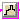

Package with models for discrete time controls
Extends from Modelica.Icons.Package (Icon for standard packages).
| Name | Description |
|---|---|
|  BooleanDelay | Zero order hold for boolean variable |
| Collection of models that illustrate model use and test models |
Zero order hold for boolean variable

Block that delays the boolean input signal by one sampling interval. For example, if u denotes the input, y denotes the output, and ti and ti+1 denote subsequent sampling instants, then the model outputs
y(ti+1) = u(ti).
Extends from Modelica.Blocks.Interfaces.BooleanSISO (Single Input Single Output control block with signals of type Boolean), Modelica.Blocks.Interfaces.DiscreteBlock (Base class of discrete control blocks).
| Type | Name | Default | Description |
|---|---|---|---|
| Time | samplePeriod | Sample period of component [s] | |
| Time | startTime | 0 | First sample time instant [s] |
| Type | Name | Description |
|---|---|---|
| input BooleanInput | u | Connector of Boolean input signal |
| output BooleanOutput | y | Connector of Boolean output signal |